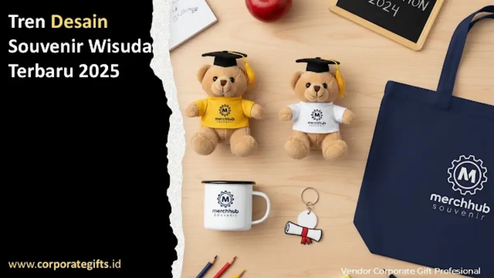

Corporate Gifts ID - Tren desain souvenir wisuda tahun 2026 didominasi oleh empat arah utama, yaitu estetika minimalis elegan, personalisasi berbasis teknologi digital (QR code dan smart chip NFC), integrasi material ramah lingkungan (eco-sustainable), serta adaptasi sentuhan budaya lokal. Kombinasi keempat elemen ini mengubah cinderamata kelulusan dari sekadar suvenir seremonial menjadi bagian dari pengalaman wisuda yang personal, modern, dan bernilai kenang tinggi.
Perayaan wisuda universitas maupun sekolah menengah selalu menjadi momen puncak bersejarah. Memasuki era baru, tren cinderamata wisuda tidak lagi didominasi oleh boneka wisuda generik atau plakat kayu standar. Kampus dan institusi pendidikan kini mengadopsi souvenir custom premium yang memiliki fungsi nyata bagi wisudawan saat mereka melangkah ke dunia kerja profesional.
Poin Kunci Tren Desain Souvenir Wisuda 2026:
- Palet Warna Modern & Finishing Matte: Dominasi nuansa earth tone (sage green, cream, sand) dan finishing cat doff bertekstur mewah.
- Integrasi Smart Digital Feature: Pemanfaatan kode QR dan chip NFC pada gantungan kunci atau kartu ucapan untuk mengakses portofolio kenangan angkatan.
- Eco-Friendly & Sustainable Living: Penggunaan bambu organik, stainless steel tahan karat, dan kemasan hardbox daur ulang premium.
- Karakter Budaya Nusantara: Sentuhan aksen batik geometris atau ukiran etnik kontemporer yang merepresentasikan kebanggaan almamater.
Desain Minimalis Elegan Masih Jadi Favorit Wisudawan
Gaya minimalis elegan tetap memegang posisi teratas dalam preferensi wisudawan generasi Z dan milenial. Konsep desain ini mengedepankan bentuk geometris sederhana, tipografi sans-serif bersih, dan minim ornamen berlebihan.
Produk seperti tumbler vacuum stainless steel berfinishing matte, frame foto meja akrilik magnetik, dan notebook binder kulit berlogo grafir laser menjadi item paling diminati. Desain minimalis memastikan cinderamata tersebut tetap pantas dan stylish saat dibawa ke kantor, ruang rapat, maupun kafe.
Personalisasi Souvenir dengan Teknologi Digital Interaktif
Salah satu inovasi paling signifikan pada souvenir wisuda tahun 2026 adalah penggabungan elemen fisik dengan konten digital:
- Smart Keychain Ber-QR Code: Gantungan kunci logam berukir barcode dinamis yang saat dipindai mengarah ke link video dokumentasi perjalanan satu angkatan.
- Mug & Tumbler Ber-NFC: Cukup dengan mendekatkan smartphone, wisudawan dapat mendengarkan pesan audio ucapan selamat langsung dari dekan atau rektor.
- Bingkai Foto Augmented Reality (AR): Menampilkan video sambutan kelulusan ketika kamera ponsel diarahkan ke permukaan foto cetak.

Kombinasi merchandise wisuda fungsional dengan teknologi digital dan sentuhan branding kampus yang elegan.
Material Ramah Lingkungan sebagai Standar Baru Cinderamata
Kesadaran terhadap isu lingkungan mendorong universitas dan sekolah menghentikan pengadaan suvenir berbahan plastik sekali pakai. Material ramah lingkungan kini menjadi standar wajib dalam tender pengadaan merchandise wisuda:
- Bambu Alami dan Kayu Daur Ulang: Digunakan untuk bodi pulpen eksklusif, plakat mini kelulusan, dan tatakan cangkir coaster.
- Stainless Steel Food Grade SUS 304: Menggantikan botol minum plastik dengan daya tahan seumur hidup.
- Tote Bag Kanvas Organik & Kertas Daur Ulang: Pengganti kantong plastik seremonial yang dapat dipakai berulang kali untuk belanja harian.
Peran Desain Grafis dan Packaging dalam Nilai Estetika
Kemasan tidak lagi dianggap sekadar pembungkus, melainkan 50% dari daya tarik visual sebuah suvenir wisuda. Hardbox eksklusif berlapis foil emas (hot stamping) atau emboss logo almamater memberikan pengalaman unboxing yang mewah.
Desainer grafis profesional memastikan harmoni antara warna korporat universitas, layout tipografi nama sarjana, dan pemilihan tekstur kertas kemasan agar menciptakan impresi prestisius yang dibanggakan oleh keluarga wisudawan.
Tabel Tren Desain Souvenir Wisuda 2026 vs Konvensional
Berikut perbandingan perbedaan mendasar antara model souvenir wisuda konvensional dengan tren inovasi 2026:
| Aspek Perbandingan | Tren Souvenir Wisuda 2026 | Souvenir Wisuda Konvensional |
|---|---|---|
| Konsep Desain | Minimalis modern, palet earth tone, matte finish | Bentuk klasik kaku dengan warna mengilap mencolok |
| Fungsionalitas Produk | Sangat tinggi (dipakai untuk kerja harian & kantor) | Rendah (hanya menjadi pajangan berdebu di lemari) |
| Interaksi Digital | Terhubung QR Code / NFC ke media video kenangan | Statis tanpa fitur interaktivitas teknologi |
| Keberlanjutan Material | Eco-friendly (bambu, stainless SUS 304, kanvas) | Didominasi plastik mika dan resin sintetis |
| Standar Kemasan | Hardbox custom premium dengan busa presisi (EVA foam) | Plastik wrap transparan berpita sederhana |
Sentuhan Budaya Lokal dalam Cinderamata Modern
Modernisasi bukan berarti melupakan akar tradisi. Tren 2026 memperlihatkan perpaduan apik antara siluet produk kontemporer dengan ornamen etnik lokal, seperti motif batik parang minimalis pada pouch kanvas atau aksen tenun ikat pada selempang wisuda premium.
Cinderamata dengan sentuhan budaya ini memberi identitas almamater yang kuat dan berkarakter, menjadikannya hadiah kelulusan yang bernilai seni tinggi.
Ingin merancang paket souvenir wisuda modern, seminar kit, atau gift box kelulusan eksklusif untuk fakultas atau universitas Anda? Konsultasikan konsep desain bersama tim ahli kami melalui form permintaan penawaran resmi (RFQ) atau hubungi WhatsApp CorporateGifts.ID sekarang juga.